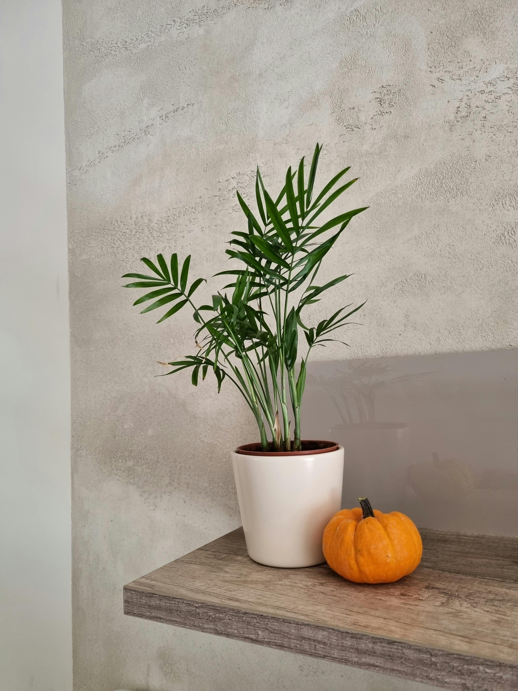

Parlor Palm
Description
a popular, low-maintenance houseplant known for its elegant, feathery fronds and ability to thrive in indoor environments. Native to Central America, this palm is perfect for brightening up any space with its lush, green foliage.
Parlor Palm
Care
Native to Central America, this palm is perfect for brightening up any space with its lush, green foliage.
- Light: Prefers bright, indirect light
- Watering: Water when the top 1-2 inches of soil feel dry.
- Soil: Well-draining potting mix is key to prevent waterlogging.
Trim away any dead or yellowing fronds to maintain its clean, lush appearance. Also,Feed with a balanced, diluted liquid fertilizer during the growing season (spring and summer).
Fun Fact
The parlor palm is one of the most extensively sold houseplant palms in the world.
More Research
Some articles to help further your independent research: